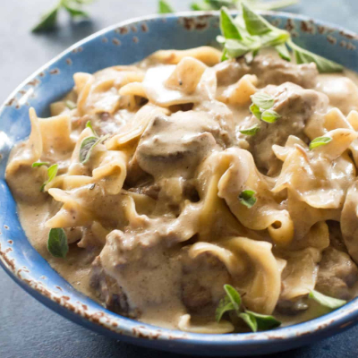

Home
Beef Stroganoff
Cheesy Chicken Rice
Loaded Potato Soup
Porkchops and Rice
Family Favorite Instant Pot Recipies
Ready..
2 tablespoons canola oil
½ onion, diced
2 teaspoons salt
2 pounds beef stew meat, cubed
1 teaspoon Pepper
3 cloves garlic, minced
½ teaspoon dried thyme
2 tablespoons soy sauce
3 cups chopped mushrooms
2 tablespoons all-purpose flour
3 cups chicken broth
1 (16 ounce) package wide egg noodles
Set...
1. Turn on your instant pot and select Saute function. Heat oil for 1 minute, add onion and 1/2 teaspoon salt. Cook and stir until onion begins to soften, 3 to 4 minutes.
2. Season beef with salt and pepper, add to pot and cook until browned on all sides. Add garlic and thyme, then pour in soy sauce.
3. Stir mushrooms and flour into the pot. Pour in chicken broth and the remaining salt. Close and lock the lid, set pressure to high and cook for 13 minutes.
4. Release pressure carefully using the quick-release method. Open pressure cooker; stir in egg noodles. Reseal the lid and set pressure to high, cooking for an additional 5 minutes
5. Release pressure naturally for 5 minutes, then release the remaining pressure. Stir and let set for 5 minutes before serving.
Yum!
